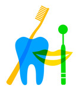

Loading...
Accueil
Docteurs
Pharmacies
Hôpitaux & Cliniques
Dentistes
Contact
Login
Dentiste - Nassek Ben Youssef
Accueil
Dentistes

Nassek Ben Youssef
Adresse :
6 avenue de l'Indépendance.
Tunis
Téléphone :
71740399
Email :
nassek.benyoussef@gmail.com
Espace publicité
Visiter la page
Copyright © 2018 - Medical annuaire
Scroll to Top